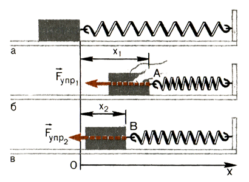
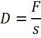
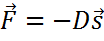
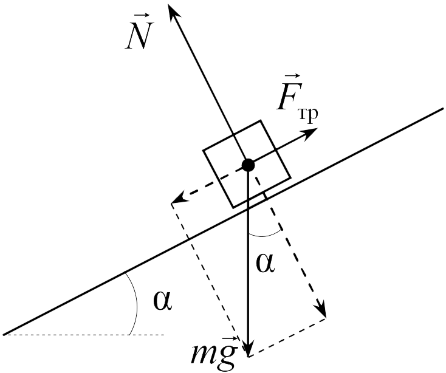
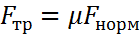
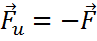
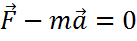
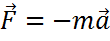

СилыСилы — Это действия тел друг на друга, создающие ускорения. Все силы можно разделить на два основных типа: Сила упругостиCилы, создавая давление, либо растяжение, могут изменять форму тела, например, длину пружины.  илы служат причиной либо ускорения тела (динамическое действие), либо изменение его формы (статическое действие). В пределах упругости вещества сила и деформация пропорциональны друг другу. В этом случае справедлив закон Гука.  Коэффициент пропорциональности D носит названия — Жесткостьили коэффициент упругости. Здесь: Сила упругости противодействует действующей на тело (пружину) силе. С учетом направления действия получим для силы упругости формулу: 
Сила тренияДвижущееся тело теряет свою энергию, не только преодолевая сопротивление окружающей среды, но и из-за наличия трения. Сила трения действует на поверхности соприкосновения тел и затрудняет их перемещение относительно друг друга.  Сила трения всегда направлена вдоль поверхности соприкосновения в сторону, противоположную движению. Она всегда меньше силы нормального давления.  Здесь: Сила инерцииСилы являются причиной любого изменения состояния движения, т.е. любого ускорения. Ускорение возникает в направлении действия силы. Кроме того, существуют так называемые силы инерции, которые возникают как следствие ускорений. Они направлены в сторону, противоположную ускорению. Силы инерции возникают только в системе отсчета, движущейся с ускорением, т. е. это кажущиеся силы. Силы, вызывающие ускорение данного тела, и силы инерции, возникающие вследствие ускорения, всегда равны по величине и противоположно направлены.    Здесь: Чтобы установить, как движется тело, на которое действует сразу несколько сил, часто пользуются принципом динамического равновесия (ΣF = 0), причем в этом случае кроме действующих сил и сил трения следует также учитывать кажущиеся силы инерции (принцип ДАламбера).
|